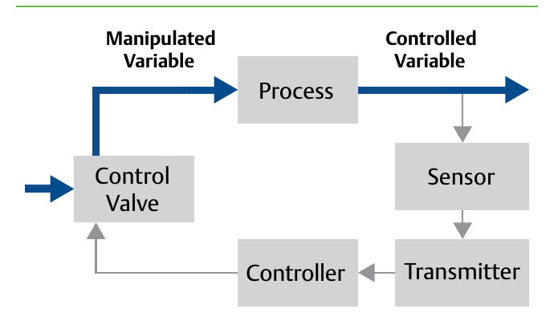

The Feedback Control Loop

- 1Sensor reads the controlled variable (flow, pressure, temperature…)
- 2Transmitter and controller compare it to the target
- 3Control valve moves to correct the process — closing the loop
After Control Valve Handbook, 6th ed., Fig. 1.1 — used directly, block labels retained. Component Index: cvh-cmp-feedback-control-loop.